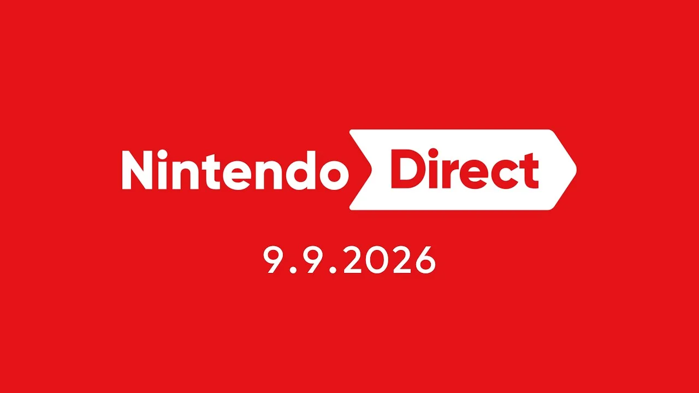

Luiso · 9 de septiembre de 2026 · 13 min de lectura
Después del Direct dedicado ayer al 40.º aniversario de The Legend of Zelda, Nintendo volvió a poner toda la atención sobre Nintendo Switch 2 con una presentación de aproximadamente 45 minutos centrada principalmente en los próximos lanzamientos de la consola.
https://youtu.be/U0CMEjagHlI?t=1706
Y esta vez hubo de todo: juegos completamente nuevos, remakes, remasterizaciones, ports, actualizaciones gratuitas, DLC y varias sorpresas. Entre los anuncios más importantes estuvieron Metroid Ravenous, Kirby and the World Beyond, Persona 6 y la versión para Switch 2 de Monster Hunter Wilds.
A continuación, repasamos todo lo mostrado.
Capcom abrió el Direct con uno de los anuncios más importantes: Monster Hunter Wilds llegará a Nintendo Switch 2 el 4 de diciembre de 2026.
La versión incluirá las actualizaciones de contenido publicadas hasta el momento y permitirá jugar mediante comunicación local, además del multijugador online.
Pero Capcom también confirmó que la expansión Monster Hunter Wilds: Ascendance llegará posteriormente a Switch 2, con nuevas zonas como islas flotantes y ruinas suspendidas en el aire.
Fecha: 4 de diciembre de 2026
Plataforma: Nintendo Switch 2
Uno de los grandes anuncios third party fue Final Fantasy VII Revelation, la tercera y última entrega de la trilogía de remakes de Final Fantasy VII.
El juego llegará a Nintendo Switch 2 el 8 de abril de 2027.
La presentación mostró a Cloud y sus compañeros viajando a bordo de la Highwind, mientras intentan detener los planes de Sephiroth y evitar la caída de Meteor.
El título promete un mundo mucho más abierto y una aventura que servirá como conclusión del proyecto iniciado con Final Fantasy VII Remake.
Fecha: 8 de abril de 2027
Plataforma: Nintendo Switch 2
La sorpresa de Square Enix fue Crisis Core: Final Fantasy VII Reunion, que ya está disponible en Nintendo Switch 2.
El RPG protagonizado por Zack Fair funciona como precuela de Final Fantasy VII y recupera personajes como Cloud, Aerith, Genesis y Sephiroth.
Fecha: disponible desde hoy
Plataforma: Nintendo Switch 2
Nintendo anunció una nueva edición de Hyrule Warriors: Age of Calamity para Switch 2.
Esta versión funcionará a 60 FPS, permitirá mostrar más enemigos simultáneamente e incluirá todo el contenido del Expansion Pass original.
También sumará un nuevo Calamity Mode, una dificultad especialmente exigente.
Los usuarios que tengan la versión de Nintendo Switch podrán transferir sus partidas y adquirir la versión digital con descuento.
Fecha: 25 de febrero de 2027
Plataforma: Nintendo Switch 2
Meccha Chameleon es una nueva propuesta multijugador basada en el escondite.
Los jugadores pueden copiar colores y patrones del escenario para camuflarse, mientras el equipo encargado de encontrar a los demás intenta descubrirlos.
Admite partidas de hasta 12 jugadores online.
Fecha: disponible desde hoy
Plataforma: Nintendo Switch 2
Fire Emblem: Fortune's Weave recibió un nuevo tráiler antes de su lanzamiento.
El juego llevará a los jugadores al Imperio de Dagdan, donde deberán participar en los denominados Juegos Heroicos, mientras una amenaza relacionada con el renacimiento de un dios demoníaco se desarrolla detrás de escena.
Fecha: 17 de septiembre de 2026
Plataforma: Nintendo Switch 2
Warhorse Studios confirmó que Kingdom Come: Deliverance II llegará a Switch 2 mediante una Royal Edition.
La edición incluirá el juego base junto con todo el contenido descargable publicado hasta ahora.
Fecha: 2027
Plataforma: Nintendo Switch 2
Después de varios meses de espera, Level-5 finalmente confirmó la fecha de lanzamiento de El Profesor Layton y el Nuevo Mundo a Vapor.
La nueva aventura llevará a Layton a la ciudad steampunk de Steam Bison, donde deberá enfrentarse a una nueva colección de acertijos.
Fecha: 10 de diciembre de 2026
Plataformas: Nintendo Switch 2 y Nintendo Switch
Level-5 también sorprendió con Yo-kai Watch 2: Haunted Domain, un nuevo remake de Yo-kai Watch 2.
El tráiler mostró nuevamente a Nate, Jibanyan y Whisper, aunque por ahora no se confirmó una fecha de lanzamiento.
Fecha: por determinar
Plataforma: Nintendo Switch 2
Pikmin 4 recibirá una edición específica para Switch 2 el 12 de noviembre.
Una de las principales novedades será la Dandori Academy, con 72 desafíos contrarreloj, medallas y clasificaciones mundiales.
También se aprovechará el micrófono de Switch 2 para permitir que los jugadores den órdenes de voz a Oatchi.
Fecha: 12 de noviembre de 2026
Plataforma: Nintendo Switch 2
Bloober Team, responsable del remake de Silent Hill 2, presentó Onyx: The Dark Grip.
Se trata de un juego de terror psicológico desarrollado específicamente alrededor de las características de Switch 2. La experiencia utiliza pantalla táctil y controles de movimiento para interactuar con el mundo y alterar la realidad.
Fecha: 2027
Plataforma: Nintendo Switch 2
Monolith Soft prepara una nueva edición de Xenoblade Chronicles 3 para Switch 2.
La versión incorporará mejoras técnicas y nuevos contenidos, incluyendo una nueva heroína llamada Shimmer.
Fecha: 3 de diciembre de 2026
Plataforma: Nintendo Switch 2
Los creadores de Overcooked! presentaron Stage Fright, una aventura cooperativa para dos jugadores.
La propuesta combinará puzles, exploración y situaciones de terror, tanto en cooperativo local como online.
Fecha: 2027
Plataformas: Nintendo Switch y Nintendo Switch 2
Metronomik, el estudio responsable de No Straight Roads, presentó Ondeh Ondeh Kaya's Tasty Tale.
Se trata de una aventura de puzles musicales protagonizada por Kaya, quien utiliza una cuchara mágica para capturar ritmos.
Fecha: 2027
Plataforma: Nintendo Switch 2
LEGO Batman: Legacy of the Dark Knight recibió un nuevo vistazo antes de su lanzamiento.
El juego ofrecerá una Gotham de mundo abierto, conducción del Batimóvil y cooperativo local.
Fecha: 18 de septiembre de 2026
Plataforma: Nintendo Switch 2
The Game Bakers, responsables de Furi y Haven, presentaron Cairn.
La protagonista, Aava, deberá escalar el Monte Kami utilizando diferentes recursos, cuerdas y herramientas para encontrar la mejor ruta hacia la cima.
El juego tendrá una demo gratuita en la eShop.
Fecha: principios de 2027
Plataforma: Nintendo Switch 2
Capcom confirmó uno de los anuncios más importantes para los amantes del terror: los remakes de Resident Evil 2, Resident Evil 3 y Resident Evil 4 llegarán a Nintendo Switch 2.
En concreto:
Las versiones digitales llegarán en octubre, mientras que las ediciones físicas estarán disponibles posteriormente.
Fecha digital: 16 de octubre de 2026
Fecha física: 29 de enero de 2027
Plataforma: Nintendo Switch 2
Crystal Dynamics y Flying Wild Hog mostraron nuevamente Tomb Raider: Legacy of Atlantis, el remake de la aventura original de Lara Croft de 1996.
La nueva versión reconstruye la primera aventura de Lara, incluyendo localizaciones como Perú, Grecia y Egipto.
Fecha: 12 de febrero de 2027
Plataforma: Nintendo Switch 2
Nintendo Switch Sports Resort permitirá recorrer libremente Wuhu Island, además de ofrecer 12 deportes.
La actualización también incorporará vehículos y un nuevo modo de competición.
Fecha: 22 de octubre de 2026
Plataforma: Nintendo Switch 2
CD Projekt Red confirmó que The Witcher 3: Wild Hunt Remastered llegará a Switch 2 el 29 de septiembre.
La versión incorporará controles táctiles, giroscopio y funciones adaptadas al hardware, además de incluir sus dos grandes expansiones.
Fecha: 29 de septiembre de 2026
Plataforma: Nintendo Switch 2
Nintendo sorprendió con Metroid Ravenous, una nueva aventura 2D protagonizada por Samus Aran.
El juego transcurre en una luna hostil donde Samus, herida y debilitada, deberá utilizar una nueva capacidad que le permite absorber energía de sus enemigos.
El concepto se resume en una frase: comer o ser comida.
El lanzamiento será exclusivo de Nintendo Switch 2 y estará acompañado por nuevos amiibo.
Fecha: 28 de enero de 2027
Plataforma: Nintendo Switch 2
Capcom también anunció Mega Man: Dual Override.
La principal novedad es que Proto Man será jugable, ofreciendo un estilo de combate diferente al de Mega Man.
Ambos personajes podrán utilizar nuevas habilidades Override y equipar diferentes Custom Chips.
Fecha: primavera de 2027
Plataformas: Nintendo Switch y Nintendo Switch 2
Marvelous presentó Eternal Anima, un nuevo RPG japonés por turnos.
La historia transcurre en un mundo cubierto por el océano y gira alrededor de Wade, un soldado capaz de recuperar recuerdos de otras personas y utilizar habilidades heredadas de héroes del pasado.
Fecha: 4 de marzo de 2027
Plataforma: Nintendo Switch 2
Spike Chunsoft presentó Danganronpa 2×2, una reinterpretación de Danganronpa 2.
El juego recuperará el escenario original, pero incorporará una nueva historia alternativa, además del modo Slayhem, que modificará víctimas, culpables y situaciones de los juicios.
Fecha: 14 de enero de 2027
Plataformas: Nintendo Switch y Nintendo Switch 2
El juego de lucha de SNK llegará finalmente a Switch 2.
La versión digital incluirá el contenido correspondiente al lanzamiento y contará con personajes invitados de Tokyo Revengers.
Fecha digital: 22 de octubre de 2026
Edición física: enero de 2027
Plataforma: Nintendo Switch 2
SNK también prepara una colección para celebrar los 30 años de Metal Slug.
El paquete reunirá 10 juegos de la franquicia, incluyendo Metal Slug 1-6, Metal Slug X, Metal Slug 7 y Metal Slug Advance.
También tendrá multijugador online y una galería de arte y música.
Fecha: 2027
Plataformas: Nintendo Switch y Nintendo Switch 2
Square Enix anunció un remake en 3D de Romancing SaGa 3.
El RPG permitirá elegir entre ocho protagonistas, contará con nuevas cinemáticas y una banda sonora arreglada.
Fecha: 16 de febrero de 2027
Plataformas: Nintendo Switch y Nintendo Switch 2
Atlus tuvo uno de los momentos más importantes del Direct.
Primero se mostró Persona 4 Revival, el remake de Persona 4, que llegará a Switch 2 el 20 de mayo de 2027.
Pero inmediatamente después llegó la sorpresa: Persona 6 es oficialmente una realidad y llegará a Nintendo Switch 2.
Por ahora, Atlus no mostró gameplay ni confirmó una fecha de lanzamiento. El primer teaser fue deliberadamente breve y se limitó a presentar una estética oscura y el logotipo del juego.
Es importante destacar que la presentación no confirmó una fecha para Persona 6.
Persona 4 Revival: 20 de mayo de 2027
Persona 6: fecha por determinar
Plataforma: Nintendo Switch 2
Nintendo reservó el último gran anuncio para Kirby.
Kirby and the World Beyond será una nueva aventura completamente 3D que llegará durante la primavera de 2027.
El tráiler mostró escenarios de gran escala, nuevas habilidades para Kirby y el regreso de King Dedede.
Nintendo también recordó que 2027 será el 35.º aniversario de Kirby, por lo que habrá más novedades de la franquicia durante los próximos meses.
Fecha: primavera de 2027
Plataforma: Nintendo Switch 2
El Direct también dedicó unos minutos a mostrar una enorme cantidad de juegos third party en un montaje rápido.
Estas fueron las principales confirmaciones:
Juego
Lanzamiento
Plataforma
007 First Light
2026
Switch 2
Dragon Quest Monsters: The Withered World
3 diciembre 2026
Switch / Switch 2
Stellar Blade Complete Edition
5 noviembre 2026
Switch 2
It Takes Two
15 octubre 2026
Switch 2
The Crew Motorfest
8 octubre 2026
Switch 2
Torneko's Mystery Dungeon: Classic HD
Disponible hoy
Switch / Switch 2
Hela
1 diciembre 2026
Switch 2
Eriksholm: The Stolen Dream
3 diciembre 2026
Switch 2
The Ascent Ultimate Edition
diciembre 2026
Switch 2
Palia
diciembre 2026
Switch 2
Bluey's Happy Snaps
15 octubre 2026
Switch / Switch 2
Hot Wheels Infinite Rush
10 septiembre 2026
Switch 2
Fading Echo
17 septiembre 2026
Switch 2
Hell Is Us
8 octubre 2026
Switch 2
Marvel's Guardians of the Galaxy Encore Edition
5 noviembre 2026
Switch 2
Yu-Gi-Oh! Tag Force GX
16 febrero 2027
Switch / Switch 2
Far Cry 3 Classic Edition
primavera 2027
Switch 2
Far Cry 3 Blood Dragon Classic Edition
primavera 2027
Switch 2
The Apothecary Diaries: The False Imperial Brother
principios de 2027
Switch / Switch 2
House Flipper 2
octubre 2026
Switch 2
Sonic Pico Park
12 noviembre 2026
Switch / Switch 2
La lista completa y las fechas mostradas durante el montaje coinciden en líneas generales con el repaso posterior al Direct; en algunos casos Nintendo todavía utiliza ventanas como “octubre”, “primavera de 2027” o “principios de 2027”, por lo que no corresponde inventar un día concreto.
El Direct no se limitó a presentar nuevos títulos.
La versión 1.8.0 incorpora 10 circuitos clásicos de Super Mario Kart reconstruidos en 3D, entre ellos Choco Island, Vanilla Lake y Ghost Valley.
La actualización es gratuita y está disponible desde hoy.
Star Fox recibirá una actualización gratuita el 30 de septiembre con un nuevo modo de batalla a pantalla dividida para hasta cuatro jugadores, además de nuevas misiones.
El clásico de GameCube ya está disponible en Nintendo Classics para Switch 2 mediante Nintendo Switch Online + Expansion Pack.
La segunda parte del Expansion Pass llegará a finales de 2026 e incorporará nuevos accesorios y opciones de personalización.
La expansión The Keepsake Sea llegará en noviembre de 2026, incorporando contenido submarino y nuevos personajes.
Nintendo también presentó nuevos amiibo de Kirby Air Riders, que estarán disponibles el 12 de noviembre.
Con semejante cantidad de anuncios, Nintendo Switch 2 quedó con un calendario particularmente cargado para los próximos meses:
Septiembre 2026
Octubre 2026
Noviembre 2026
Diciembre 2026
Enero 2027
Febrero 2027
Marzo 2027
Abril 2027
Mayo 2027
Y todavía quedan sin fecha exacta títulos como Persona 6, Yo-kai Watch 2: Haunted Domain, Kingdom Come: Deliverance II Royal Edition, Onyx: The Dark Grip, Stage Fright, Metal Slug Ultimate Collection, Mega Man: Dual Override y Kirby and the World Beyond.